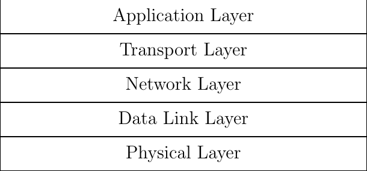

Use cases
The transport layer is an important layer in the TCP/IP protocol stack since this is the first layer that controls the exchange of information between the communicating hosts. It enhances the service provided by the network layer in several ways. First, the transport layer allows to multiplex data exchanged by different applications running on a given pair of communicating hosts. Second, the transport layer improves the reliability of the network layer. A wide range of reliability mechanisms have been proposed and implemented in transport protocols. These include, e.g. the utilization of checksums or CRCs to detect transmission errors, various techniques to recover from packet losses or congestion control mechanism that enable the transport protocol to detect the rate at which a flow can be transmitted without causing congestion.

Fig. 1 The TCP/IP protocol stack
Transport protocols provide different types of services to the applications. The simplest one is the datagram service provided by UDP [1] that uses source and destination ports to provide multiplexing and uses a checksum to detect transmission errors. The real-time transport protocol (RTP) [2] provides services intended for real-time applications such as interactive audio and video. These services include type identification, sequence numbering, timestamping and monitoring using the companion RTCP protocol. The Datagram Congestion Control Protocol (DCCP) [3] mainly adds congestion control capabilities for UDP or RTP sessions. The Transmission Control Protocol (TCP) [4] enables the applications to create connections that support a bidirectional and reliable bytestream. TCP also includes flow-control and congestion control to adapt the transmission rate to current capabilities of the network and the communicating hosts. Nowadays, applications often use Transport Layer Security (TLS) [5] above TCP to secure the exchange of data. The Stream Control Transmission Protocol (SCTP) [6] brought the support for multiple streams and failover capabilities. QUIC [7] the most recent transport protocol standardized within the IETF provides reliably delivery, includes TLS, supports multiple streams and connection migration.
Before looking at how Multipath TCP [8] works in details, it is interesting to first analyze the different use cases where Multipath TCP is used. Some of these use cases have motivated the design of Multipath TCP. Others appeared after the design was complete. Other uses cases will likely appear in the coming years.
As explained in the previous section, with Multipath TCP, hosts can exchanged data over different paths. At a high level, a Multipath TCP implementation lies between an application that uses the socket layer to exchange data over a connection. With TCP, a client establishes a connection with a server. It then uses it to send and receive data reliably thanks to the retransmission, flow and congestion control mechanisms that are included inside TCP. This TCP connection is identified by using four fields that are present in each packet exchanged over the connection:
client IP address
server IP address
client TCP port
server TCP port
All packets contain these four fields that are often called the four-tuple.
At a high-level, the main difference between TCP and Multipath TCP is that a Multipath TCP connection is in fact a group of one or more TCP connections. These different TCP connections are entirely managed by Multipath TCP and are transparent to the application. The application interacts through the socket layer as if there was a single underlying TCP connection. Multipath TCP manages the underlying TCP connections. More precisely, Multipath TCP includes two different algorithms to control the underlying connections:
a path manager that decides when an underlying TCP connection should be created or terminated
a packet scheduler that decides over which underlying connection each new data is transmitted
The path manager and the packet scheduler play a key role in each use case as we will see shortly. To illustrate them, let us consider a very simple an naive application that runs on a dual-stack client and interacts with a dual-stack server. There are two "paths" that the client and the server can use to exchange data : IPv4 and IPv6. Although both the client and the server are attached using a single link to the network, their end-to-end paths might differ through the network and pass through different intermediate routers.
When web browsers run on dual-stack hosts, they usually rely on the Happy Eyeballs mechanism to select between IPv6 and IPv4. In a nutshell, they typically try first to initiate a TCP connection to the server using IPv6. If after some time, e.g. 50 msec, the connection is not established, the client also tries using IPv4. In the end, the first connection to be established is selected and used to exchanged data.
Multipath TCP would also use Happy Eyeballs, but once one connection has been established, say IPv6, the client and the server will exchange their IPv4 addresses over the Multipath TCP connection. A simple path manager running on the client would then establish a second TCP connection using IPv4. This new TCP connection will be part of the Multipath TCP connection that was established over IPv6. The client and the server can now use two different TCP connections to exchange data: a first connection that uses IPv6 and a second connection that uses IPv4. If these connections have similar performance, a simple packet scheduler such as round-robin can be used to distribute the data over them. Such a scheduler alternatively sends data over the IPv4 and the IPv6 connections.
Improving resilience
One of the first large scale deployment of Multipath TCP was done by Apple. Shortly after the publication of the Multipath TCP specification [8], Apple launched iOS13. This new version added Multipath TCP support for the Siri application. Siri is Apple's voice assistant. Siri enables users to speak to their phone. In a nutshell, Siri detects that the user is talking to it using a special word, then it simply records the sound and sends it to a server managed by Apple over HTTPS. The server analyzes the received voice samples, extracts the command and return a response to the smartphone. Initially, this service was running over regular TCP, but Apple noticed that when users move, their smartphones sometimes switch from Wi-Fi to cellular or the opposite. These handovers were a nightmare from a user experience viewpoint.
Consider a simple scenario where a user walks out of her home and asks Siri to show her the map to drive to a restaurant before entering her car. When the user leaves her home, her smartphone is connected to Wi-Fi and the voice samples are sent over the Wi-Fi network. Unfortunately, when the smartphone gets out of reach of the Wi-Fi access point and switches to the cellular network, this breaks the connection with the server. The smartphone can establish a new connection and send again the voice samples, but this delays the response from the server and the user gets annoyed.
By using Multipath TCP, Siri solves this annoying problem in an elegant manner. The initial connection with the Siri server is created over the Wi-Fi network. When the smartphone detects the loss of the Wi-Fi network, it switches to the cellular one and can immediately create a second TCP connection that joins the initial one. This second connection supplements the initial one. The Siri application running on the smartphone or on the server does not detect anything. Multipath TCP sent the voice samples initially over the Wi-Fi network and the last samples over the cellular one. The server responds using the cellular network. The advantage for the user is that the handover from Wi-Fi to cellular does not cause any delay. Siri provides the requested information as if the smartphone had always been attached to a single network. Thus Multipath TCP hides the handovers to the application.
Apple's use case requires a specific path manager and a packet scheduler. Two path managers are possible depending on whether the smartphone can enable both cellular and Wi-Fi or only one radio interface at a time. If the smartphone can simultaneously activate both radio interfaces, then the path manager can create a backup connection over the cellular interface when the Wi-Fi interface is the primary one. This backup connection can be established shortly after the handshake on the Wi-Fi interface. This consumes some data one the cellular network, but this enables the smartphone to immediately send data over the cellular connection is the primary connection over the Wi-Fi interface fails. This path manager implements a make before break approach to handovers. Another possibility is to use a break before make approach. In this case, the cellular network is not used until the failure of the Wi-Fi network. The path manager detects the failure and immediately creates a connection over the cellular network.
Concerning the packet schedulers, let us first evaluate the round-robin scheduler that we discussed before. Clearly, such a packet scheduler would not make sense to support this application. If the smartphone does not move, it would send part of the data over the cellular and the Wi-Fi networks without any reason. When the user moves, it could continue to use a broken network. A better approach is to prioritize the network interfaces. If the connection over the Wi-Fi network is active, it should be used. The connection using the cellular network should only be used after the failure of the Wi-Fi connection. This works well for the data sent by the smartphone. The smartphone knows from its network cards when the cellular and Wi-Fi networks are active or not. However, on the server side, the situation is more difficult. Consider the case where the smartphone has created a backup connection over the cellular interface and a primary one over the Wi-Fi network. The smartphone has sent most of the data over the Wi-Fi interface and the server has returned all acknowledgments over this interface. Assume that the Wi-Fi network fails abruptly. At this time, the smartphone cannot anymore send information over the Wi-Fi connection, but the server is not aware of the problem. If the server needs to return a response, it will probably send it over the Wi-Fi connection because this is the connection that it has used until now. The corresponding packets will never reach the smartphone. They will need to be retransmitted by the server before reaching the smartphone over the cellular interface. Now consider a slight variation to this situation. The smartphone has sent almost all voice samples over the Wi-Fi interface. This interface fails when Siri collects the last voice sample. The smartphone sends this voice sample over the cellular connection. When the server detects that the smartphone sent data over the cellular interface, it can guess that there has been a problem with the Wi-Fi connection and configure its packet scheduler to prefer the cellular interface. For the Siri application, the best packet on the server is a scheduler that always send data over the connection that received the most recent data or acknowledgment. The arrival of a packet one connection is a confirmation that it connection currently works.
Apple improved their utilization of Multipath TCP since 2013. Initially, Multipath TCP exposed a private API that was only used by Siri. Nowadays, other Apple applications such as Apple Maps and Apple Music also use Multipath TCP. Third party applications also use Multipath TCP through the Swift API supported by recent versions of iOS.
Although this usage of Multipath TCP has been widely discussed, this was not the first commercial deployment. The first deployment was done by Multipath Networks, an Irish company that saw the potential benefits of Multipath TCP while it was being developed within the IETF. Their use case was very different. Emergency services like police or firemen started to use laptops connected to cellular networks. However, in rural areas, cellular coverage is sometimes flaky and some areas are not fully covered by the different cellular providers. This was a problem for firemen who were operating in an area that was not well covered by their cellular provider. Multipath Networks developed an embedded router that could connect to several cellular providers and would easily switch from one to another when required. They cooperated with the Multipath TCP developers to ensure that Multipath TCP could efficiently detect different types of failures that they had observed in the field.
Improving quality of experience
Another important use case for Multipath TCP on smartphones is to improve quality of experience. Smartphones can use either Wi-Fi or cellular. There are conditions where cellular provides better performance than Wi-Fi and the opposite is true. Initially, the smartphones preferred Wi-Fi over cellular because Wi-Fi was usually faster and cheaper. The situation changed as cellular network operators deployed 4G and now 5G and offered unlimited data plans. For many users, prioritizing Wi-Fi over cellular is not a requirement anymore. Given that there is no monetary incentive, when should a smartphone use Wi-Fi or cellular ? The answer depends on the current performance of the cellular or Wi-Fi network. There are many situations where a smartphone can use both Wi-Fi or cellular and they provide different performance. Here are a few classical examples. Consider a smartphone who is attached to a Wi-Fi network in a pub that is attached to a low bandwidth ADSL Internet access. While the Wi-Fi signal can be perfect from a radio viewpoint, the end-to-end performance can be very weak due to congestion on the ADSL link. In this case, the smartphone should provide use the cellular network to provide a good user experience. Another example is a smartphone in a company meeting room. The enterprise buildings are far from the cellular base station but the enterprise Wi-Fi is strong. In this case, the smartphone should probably use the Wi-Fi network. Between these two extremes, there are many situations where one network provides better performance than the other, possibly during short periods of time, e.g. due to congestion with other users, due to user mobility, ...
A typical use case are interactive applications such as a map. When a user interacts with such an application, she expects that her gestures will immediately move the map shown on the screen and that any request for a path will be answered immediately. For such an application, the path manager would establish a connection over both networks. The two connections will always be active. TCP's congestion control scheme automatically measures the performance of the two connections (delay, bandwidth, ...) every time they are used to send data. The packet scheduler would then prefer the connection having the smallest delay and would switch from one connection to another if data needs to be retransmitted or delay becomes too high. As an example, Apple's interactive policy prefers the Wi-Fi network as long as its delay is lower than 250 msec. If the delay increases too much, it switches automatically to cellular.
Music and video streaming are another example of a smartphone application that can leverage Multipath TCP when the quality of the Wi-Fi and cellular connections varies. These applications require a regular throughput to stream the music or the video from a server. When a user moves, the quality of the radio signal changes as she moves away from the antenna. In parallel, congestion caused by traffic from other users in the same network can decrease the available throughput. A path manager would support such an application by establishing a connection over both networks. The packet scheduler could initially prefer the Wi-Fi connection that is supposed to be cheaper, but it would monitor the average throughput. If the throughput drops below the bandwidth required to stream the music or the video, then it would start to use the other connection to transmit additional data.
Improving bandwidth
The previous sections have described use cases where Multipath TCP manages the utilization of networks that have enough capacity to support the applications. However, there are situations where a single network connection is not sufficient.
A first example concerns Internet access in rural areas. Several Internet access technologies are used to provide Internet access to home users and small enterprise networks: fiber, cable, xDSL, fixed wireless access and even satellite. Optical fiber provides the highest throughput, but its deployment cost increases with the distance. Today, it becomes economically feasible to deploy optical fibers in cities. However, the economic factors prevent a wide deployment of optical fibers in rural areas where the distance that needs to be covered to connect a single household is too high. Cable is a bit cheaper than fiber, but usually mainly deployed in cities. xDSL is already deployed in many rural areas since it relies on the telephone lines that have been installed decades ago. Unfortunately, these telephone lines are long and the bandwidth of an xDSL link decreases with the distance. Many users in rural areas are left with bandwidth of 10 Mbps or less. Satellites provided an alternative for isolated rural areas. However, the first deployment were based on geostationary satellites that cover a wide geographical area, but suffer from a high delay. Recently, companies such as Starlink started to deploy LEO satellites to serve rural areas. These satellites provide much lower delays compared to the geostationary ones.
Wireless is another option to server rural areas. Some operators have started to deploy Fixed Wireless Access networks. These rely on 4G, 5G or other technologies to serve all the households in the geographical area covered by the antennas. Depending on the population density, this typically requires to increase the capacity of the cellular network since the a household uses much more data than the average mobile user. To cope with this problem, some operators combine xDSL and cellular. In this case, the xDSL network is preferred and the cellular network is used when there is not enough capacity on the fixed network. Different hybrid network solutions have been deployed. One approach leverages Multipath TCP. In this case, two Multipath TCP proxies are used: one in the hybrid CPE and one in a server called the Hybrid Access Gateway (HAG) that is managed by the network provider. The interactions between the enduser device, the HCPE, the HAG and the final server are described in the figure below.
When the user device initiates a TCP connection, this connection is proxied by the HCPE that converts it into a Multipath TCP connection that is itself proxied by the HAG. Since very few servers support Multipath TCP [9], the HAG proxies a regular TCP connection towards the server. As Multipath TCP is used on the connection between the HCPE and the HAG, the HCPE can create a second connection over the cellular network. Two types of path managers can be used in this scenario. A first option is a path manager that immediately creates a connection over the cellular network once the connection over the xDSL network has been accepted. Since network operators usually want to use the cellular network only when the xDSL network is fully used, an other possibility for the path manager is to measure the load on the xDSL link and only enable initiate the connection on the cellular network once the xDSL usage is above some threshold. The packet scheduler also prefers the xDSL connection. It only uses the cellular one once the xDSL connection is fully used.
Another use case that received a lot of attention in the academic community are the datacenters [10]. A datacenter combines a large number of servers that are attached to the network and exchange a lot of data. A key characteristic of datacenters is that there are multiple equal cost IP paths between any pair of servers. Consider the simple datacenter shown in the figure below. Each server is attached to one Top of Rack (ToR) switch that is connected to several distribution switches that are themselves connected to core switches. A server attached to ToR1 can reach a server attached to ToR12 using different paths that go through different core and distribution switches.
In such a datacenter, all inter-switch links have the same bandwidth and the same cost from a routing viewpoint. The ToR switch considers them to equivalent and it can thus load balance the packets that it receives over these different paths. A classical solution to load-balance the packets is to rely on Equal Cost MultiPath (ECMP) [11]. ECMP aims at balancing the load evenly among the different paths that have the same cost while ensuring that all the packets that belong to a given transport flow follow exactly the same path to prevent reordering problems. A simple, but efficient and widely deployed ECMP technique is to hash the source and destination addresses and the source and destination port of each packet and use the computed hash value as an index to select the path to reach the destinations. All the packets that belong to a TCP connection are forwarded over the same path since they all contain the same source and destination address and ports. If the datacenter carries a large number of flows, then the traffic will be typically well balanced. If not, the paths that carry the larger connections could suffer from congestion. Raiciu et al. showed by simulations and measurements that Multipath TCP could improve the utilization of these datacenter networks [10].
Each server is attached to a single ToR switch with a single network interface. Multipath TCP is used over this single interface. The intuition behind the solution proposed by Raiciu et al. is that, in such a datacenter, the path followed by the packets belonging to a TCP connection if function of the four-tuple. The source and destination addresses are fixed for all connections between two servers. The destination port is also fixed for a given server, but the server that initiates a connection can select different source ports. The path manager would be configured to establish a connection using 2, 4 or 8 different source ports. All these connections terminate on the same server, but follow different paths inside the network. If one of the paths becomes congested, then the throughput on the corresponding connection will be limited and the packet scheduler will push data over the other paths. Simulations and measurements showed that this approach helped to improve the utilization of the datacenter network.
Although this approach has been widely cited in the scientific literature, it does not seem to have been adopted by datacenter operators. This lack of deployment was probably caused by two main factors. First, the Multipath TCP implementation in the Linux kernel was only distributed as an unofficial patch for many years. Datacenter operators were reluctant to deploy an unofficial patch on their production server. A second factor is that Multipath TCP increases datacenter utilization by using buffers on the servers and on the network switches. With Multipath TCP, servers need to reorder the packets received over different paths. Some datacenter operators have considered that this additional delay could be an issue for request response applications that require shorter response times. Recent work on datacenters have focused more on reducing delays than improving network utilization.